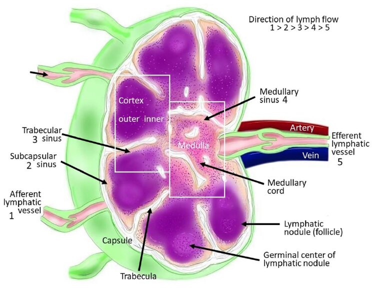
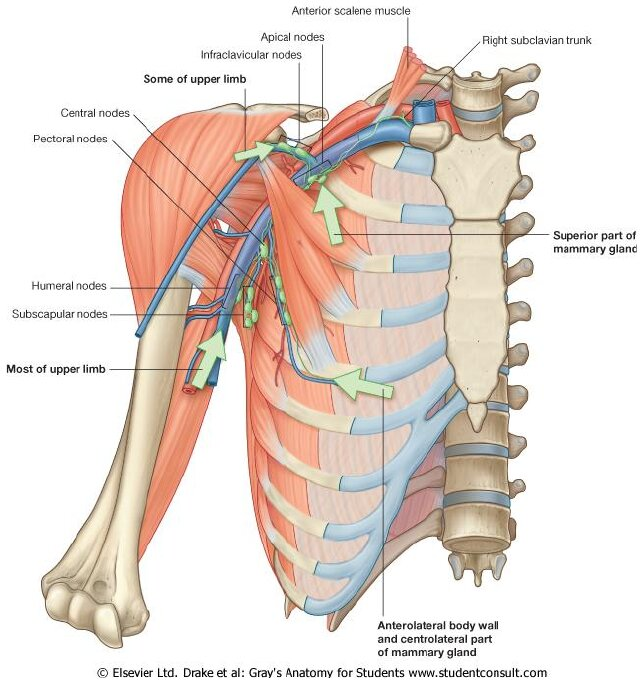
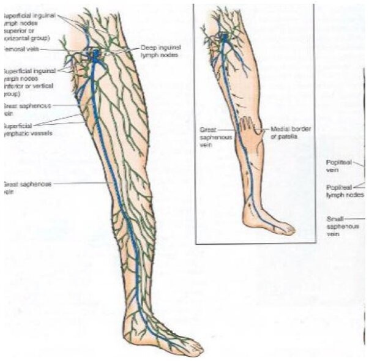
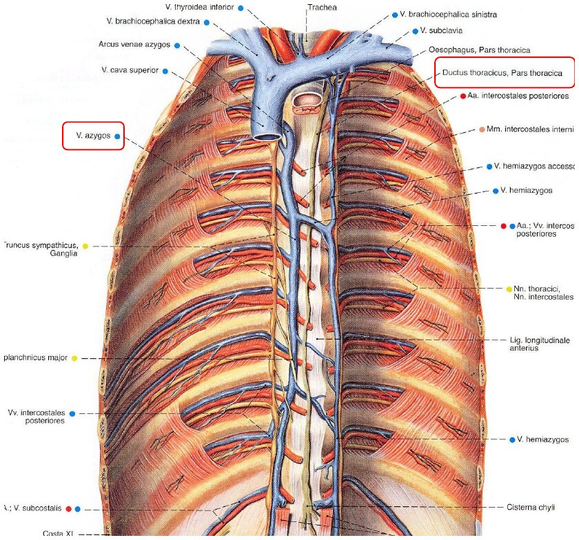
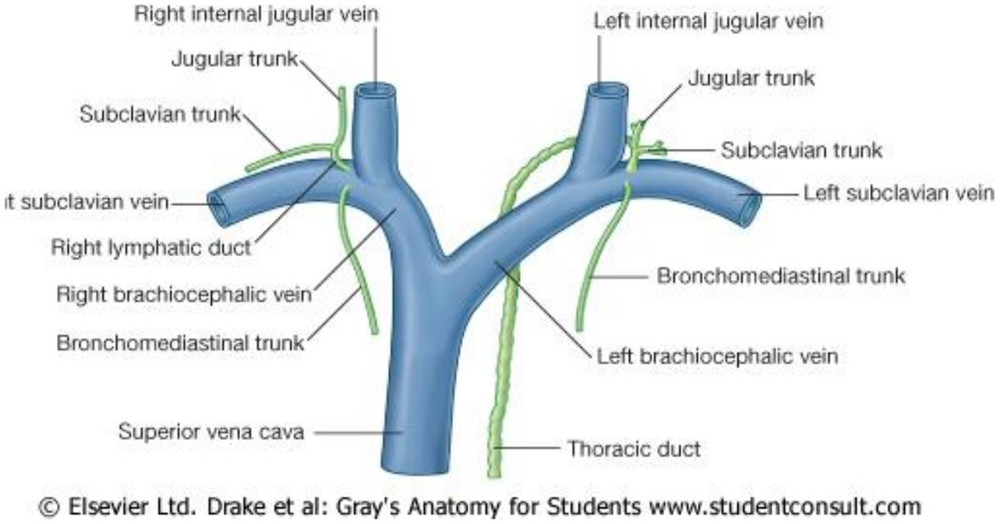

Bölüm 9 · Systema lymphoideum
Lenfatik sistem bu kitabın en çok soru gelen ikinci konusudur ve sorular iki kalıba uyar. Birinci kalıp bir bölgenin lenfinin ilk hangi düğüme gittiğini sorar: göbek altı karın duvarı, lateral topuk, meme. İkinci kalıp hangi trunkusun hangi kanala döküldüğünü sorar: ductus lymphaticus dexter'e ne dökülür, ductus thoracicus'a ne dökülmez. Lenf sisteminin genel tanıtımı Kitap 1, Bölüm 1.8'dedir. Bu bölüm on dördüncü sunumu bu iki kalıba göre düzenler.
Kan kapillerlerinden doku aralığına süzülen sıvı, başlangıç lenfatiklerine girince lenf adını alır. Başlangıç lenfatikleri kör uçlu ince damarlardır. Endotel hücrelerinin kenarları birbirinin üzerine biner ve tek yönlü kapak gibi çalışarak sıvının ve proteinlerin içeri girmesine izin verir. Çevre bağ dokusuna tutunan filamentler lümeni açık tutar. Lenf toplayıcı lenf damarlarına geçer. Bu damarların duvarında düz kas ve kapaklar vardır. Duvarın ritmik kasılması, iskelet kası hareketleri ve solunumla değişen basınçlar lenfi ileri iter, kapaklar akımı tek yönde tutar. Lenfatik taşıma kapasitesi aşılırsa doku aralığında sıvı ve protein birikir: lenfödem.
Lenfatik sistemin üç işlevi vardır: doku aralığındaki sıvıyı ve proteinleri dolaşıma geri taşımak, ince bağırsakta emilen uzun zincirli yağ asitlerinden oluşan şilomikronları taşımak ve antijenleri lenf düğümlerine ulaştırmak. Bağırsaktan gelen yağdan zengin lenfe chylus denir. Villus lenfatiklerinden mezenter damarlarına, oradan merkezî lenf yollarına ulaşır.
Lenf düğümü kapsüllü bir organdır. Afferent lenf damarları düğüme konveks yüzünden, birden çok sayıda girer. Efferent lenf damarı hilumdan çıkar. Kan damarları da hilumdan girip çıkar. Lenf düğümün içinde subkapsüler sinüs → kortikal sinüsler → medüller sinüsler → efferent damar yolunu izler. Kortekste B lenfositlerinden zengin foliküller (antijen uyarısıyla germinal merkez), parakortekste T lenfositleri, medullada medüller kordonlar ve sinüsler bulunur. Lenfositler kandan düğüme yüksek endotelli venüllerden geçer. Bir dokunun lenfini ilk alan düğüme bölgesel ya da ilk istasyon düğümü denir. Bu düğüm enfeksiyonda büyür ve tümör yayılımında ilk tutulan düğümdür.

Baş ve boyun. Yüzeyel gruplar başın tabanında halka gibi dizilir: nll. occipitales, mastoidei, parotidei, submandibulares ve submentales. Bunların efferentleri ve baş-boynun derin lenfi v. jugularis interna boyunca dizilen derin servikal zincire (nll. cervicales profundi) ulaşır. Zincirin efferentleri truncus jugularis'i oluşturur. Üst derin servikal grupta, m. digastricus'un arka karnı ile VJİ'nin çaprazlaştığı yerde bulunan nodus jugulodigastricus tonsilla palatina'nın lenfini alır (Bölüm 10.2). Boyunda "nodus infrapulmonalis" diye bir düğüm grubu yoktur (2024-2025: boyun lenf düğümü olmayan seçenek soruldu).
Üst ekstremite ve aksilla. Yüzeyel lenf damarları v. cephalica ve v. basilica ile aynı yolu izler. Medial taraftaki bazı damarlar dirseğin medialindeki kubital (supratroklear) düğümlerden geçer. Derin lenf damarları arter ve venlere eşlik ederek aksillaya ulaşır. Aksiller düğümler beş gruptur. Üç periferik grup farklı bölgelerden lenf alır: pectorales (anterior) grup meme ve ön göğüs duvarından, subscapulares (posterior) grup sırt ve omuzdan, humerales (lateral) grup koldan. Bunların efferentleri centrales gruba, oradan aksillanın tepesindeki apicales gruba ulaşır. Apikal grubun efferentleri truncus subclavius'u oluşturur. 2025-2026 uygulama sınavında nll. axillares centrales gösterildi.

Meme. Meme lenfinin büyük bölümü, özellikle lateral yarının lenfi, pektoral grup üzerinden aksiller düğümlere gider. Oradan santral ve apikal gruplara ilerler. Medial bölümün lenfi a. thoracica interna boyunca dizilen nll. parasternales'e de gidebilir. Bir tümörün lenfini ilk alan düğüme sentinel lenf düğümü denir. Lenfatik bağlantılar kişiden kişiye değiştiği için sentinel düğüm anatomik bilgiyle öngörülür ama yeri hastaya özgü haritalamayla belirlenir. Birden fazla olabilir. Aksiller lenf diseksiyonu üst ekstremitenin lenf taşıma kapasitesini azaltır ve aynı tarafta kolda sekonder lenfödeme yol açabilir.
Gövde duvarının yüzeyel drenajında sınır göbektir. Göbek üstü ön karın duvarının deri ve deri altının lenfi çoğunlukla aksiller düğümlere, göbek altının lenfi yüzeyel inguinal düğümlere gider. Bu yüzden göbek altında karın ön duvarı derisinde gelişen bir inflamasyonda ya da ödemde öncelikle nll. inguinales superficiales etkilenir (2023-2024 S13 ve S22, aynı sınavda iki ayrı soru). Sırtta da sınır benzer düzeydedir: üst sırt aksiller, alt sırt ve gluteal bölge inguinal gruplara drene olur.
Alt ekstremite. Yüzeyel lenf damarları iki yolu izler. Medial yol: ayağın medialinden ve bacağın büyük bölümünden gelen damarlar v. saphena magna boyunca yükselir ve nll. inguinales superficiales'e ulaşır. Posterolateral yol: ayağın lateral kenarından ve bacağın arka-dış yüzünden gelen bazı damarlar v. saphena parva boyunca fossa poplitea'ya gider ve nll. poplitei'ye ulaşır. Popliteal düğümler popliteal damarların çevresindeki yağ dokusundadır, bacağın derin lenfatiklerini de alır ve efferentleri derin damarlar boyunca derin inguinal düğümlere çıkar. Ayağın yüzeyel lenfinin hepsi doğrudan kasığa gitmez: lateral topuktaki enfekte bir yara diz arkasında hassas bir düğüme yol açabilir. Medial ayak bileğindeki bir yaradan bacağın medialinde yukarı uzanan kızarık bir çizgi lenf damarı iltihabıdır (lenfanjit). Kasıktaki hassas düğümler lenf düğümü iltihabıdır (lenfadenit).

| İnguinal düğümler | Yeri | Lenf aldığı bölge | Efferentleri |
|---|---|---|---|
| Yüzeyel, üst (horizontal) grup | Fascia lata'nın yüzeyinde, lig. inguinale'ye paralel | Göbek altı ön karın duvarı, gluteal bölgenin bir kısmı, perinenin yüzeyel dokuları, dış genital organlar, fundus uteri'nin bir kısmı (lig. teres uteri boyunca) | Derin inguinal ve dış iliak düğümler |
| Yüzeyel, alt (vertikal) grup | V. saphena magna'nın son bölümü çevresinde | Alt ekstremitenin yüzeyel lenfinin büyük bölümü | |
| Derin | Fascia lata'nın derininde, v. femoralis'in medialinde (canalis femoralis'te) | Alt ekstremitenin derin lenfatikleri, popliteal ve bazı yüzeyel düğüm efferentleri | Lig. inguinale'nin proksimalinde nll. iliaci externi |
Pelvis ve karın. Nll. iliaci externi dış iliak damarlar boyunca yer alır ve inguinal zincirle bağlantılıdır. Nll. iliaci interni pelvis organlarından, pelvis duvarından ve derin perineden lenf alır. Nll. sacrales sakrumun önündedir. Uterus'un lenfi üç yolla gider: fundus gonadal damarlarla lomber düğümlere (ve lig. teres uteri boyunca yüzeyel inguinal düğümlere), corpus dış iliak düğümlere, cervix parametriyal, iç iliak ve sakral düğümlere. İliak düğümlerin efferentleri nll. iliaci communes'e, oradan aorta ve VCİ çevresindeki nll. lumbales'e ulaşır. Böbrek ve gonadların lenfi de doğrudan lomber düğümlere gider. Nll. lumbales'in efferentleri truncus lumbalis dexter ve sinister'i oluşturur. Sindirim organlarının lenf damarları arterlerin dallarını izler. Organ yakınındaki düğümlerden geçen lenf truncus coeliacus, SMA ve IMA'nın kökleri çevresindeki nll. coeliaci ve mesenterici'ye, oradan truncus intestinalis'e ulaşır. Mide lenfi küçük ve büyük kurvatur boyunca dizilen gastrik, gastroomental ve pilorik düğümlerden, pankreas ve dalağın lenfi pankreatikosplenik düğümlerden geçerek çölyak düğümlere gider.
Toraks. Ön göğüs duvarının lenfi vasa thoracica interna boyunca uzanan nll. parasternales'e, arka duvarın lenfi interkostal aralıkların arka kısmındaki nll. intercostales'e gider. Akciğerde yüzeyel (subplevral) ve bronşlara eşlik eden derin pleksus vardır. Lenf hilumdaki nll. pulmonales ve bronchopulmonales'ten, sonra nll. tracheobronchiales ve paratracheales'ten geçerek truncus bronchomediastinalis'e katılır. Sol alt lobun lenfi karşı tarafa, sağ trunkusa geçebilir.
Bölgesel düğümlerin efferentleri her iki tarafta beş büyük lenf trunkusunda toplanır: baş ve boyundan truncus jugularis, üst ekstremiteden truncus subclavius, göğüs duvarı ve mediastinumdan truncus bronchomediastinalis, alt gövdeden truncus lumbalis ve bağırsaktan tek truncus intestinalis. Trunkuslar iki kanalda birleşir ve boyun kökünde iç juguler ven ile subklavyan venin birleşme açısına (angulus venosus) açılır (Şekil 9.4).
Ductus lymphaticus dexter sağ truncus jugularis, sağ truncus subclavius ve sağ truncus bronchomediastinalis'in birleşmesiyle oluşan yaklaşık 1 cm'lik kısa bir kanaldır. Trunkuslar ayrı ayrı da açılabilir. Drenaj alanı başın ve boynun sağ yarısı, sağ üst ekstremite, toraksın sağ yarısı (sağ akciğer, kalbin büyük kısmı, karaciğerin diyafram yüzünün bir bölümü) ile sınırlıdır. Sağ angulus venosus'a açılır.
Cisterna chyli genellikle üst lomber düzeyde (L1-L2), aortanın sağında ya da arkasında yer alan bir genişlemedir. Sağ ve sol truncus lumbalis ile truncus intestinalis buraya katılır. Bazı kişilerde belirgin bir kese yerine birleşen ince kanallar bulunur. Ductus thoracicus cisterna chyli'nin devamıdır ve yaklaşık 40 cm uzunluğundadır:


Ductus thoracicus iki alt ekstremitenin, pelvisin ve karnın tamamının ve başın ve boynun sol yarısı, sol üst ekstremite ve toraksın sol yarısının lenfini taşır. Boyun kökünde sol truncus jugularis, sol truncus subclavius ve sol truncus bronchomediastinalis ona katılır. Varyasyonlar sıktır: çift kanal, paralel birleşen dallar ve birden fazla venöz açıklık görülebilir. Kanalın torasik ya da servikal bölümü cerrahide yaralanırsa plevra boşluğunda süt görünümlü sıvı birikir (şilotoraks). Kaçağın yeri lenfanjiyografi ya da MR lenfanjiyografi ile gösterilir.
Trunkus sorularında tek kural taraf ve düzeydir. Sağ taraftaki üç üst trunkus (jugularis, subclavius, bronchomediastinalis) ductus lymphaticus dexter'e dökülür (2024-2025: ductus lymphaticus dexter'e dökülen olarak truncus jugularis dexter soruldu). Diğer bütün trunkuslar, yani her iki truncus lumbalis, truncus intestinalis ve soldaki üç üst trunkus ductus thoracicus'a dökülür. "Ductus thoracicus'a dökülmeyen" sorusunun cevabı sağdaki üç üst trunkustan biridir (2024-2025: sağ juguler trunkus). Sağ truncus lumbalis sağ tarafta olmasına rağmen ductus thoracicus'a gider, çünkü düzey kuralı taraf kuralından önce gelir: diyaframın altındaki her şey ductus thoracicus'un alanıdır.
Doğru: D. Ductus lymphaticus dexter sağ truncus jugularis, sağ truncus subclavius ve sağ truncus bronchomediastinalis'in birleşmesiyle oluşur.
A, B ve C yanlış: truncus intestinalis ve iki truncus lumbalis cisterna chyli'ye, yani ductus thoracicus'a katılır. Sağ truncus lumbalis de diyaframın altında olduğu için ductus thoracicus'a gider. E yanlış: sol truncus jugularis boyun kökünde ductus thoracicus'a katılır.
Not: kayıtta kök "nodi lymphaticus dexter" ve trunkuslar "ductus" olarak yazılmıştır. Terimler düzeltilmiştir.
Doğru: A. Sağ truncus jugularis başın ve boynun sağ yarısının lenfini taşır ve ductus lymphaticus dexter'e ya da doğrudan sağ angulus venosus'a açılır.
B ve C yanlış: alt gövdenin trunkusları taraf fark etmeksizin cisterna chyli üzerinden ductus thoracicus'a gider. D ve E yanlış: sol taraftaki üst trunkuslar boyun kökünde ductus thoracicus'a katılır.
Not: kayıtta yalnızca cevap ("nodi jugularis dexter") yazılıdır. Diğer şıklar tamamlanmıştır.
Doğru: E. "Nodus infrapulmonalis" adlı bir boyun düğümü yoktur. Akciğerin lenfi hilumdaki pulmoner ve bronkopulmoner düğümlerden trakeobronşiyal düğümlere gider. Bunlar göğüs içi düğümlerdir.
A ve B yanlış: submental ve submandibular düğümler başın tabanındaki yüzeyel halkanın parçasıdır. C yanlış: derin servikal düğümler VJİ boyunca dizilir ve baş-boynun bütün lenfini toplar. D yanlış: yüzeyel servikal düğümler v. jugularis externa boyunca yer alır.
Doğru: E. Göbek altındaki karın ön duvarının deri ve deri altı lenfi yüzeyel inguinal düğümlerin üst (horizontal) grubuna gider.
A ve D yanlış: aksiller düğümler göbek üstü karın duvarının yüzeyel lenfini alır. Apikal grup ayrıca ilk istasyon değil son istasyondur. B yanlış: derin inguinal düğümler ancak yüzeyel düğümlerden sonra, ikinci istasyon olarak etkilenir. C yanlış: parasternal düğümler ön göğüs duvarının ve memenin medialinin derin lenfini alır.
Doğru: A. Bölgenin yüzeyel lenfini taşıyan ilk istasyon yüzeyel inguinal düğümlerdir. Bu düğümlerdeki drenaj bozukluğu bölgede lenf birikmesine yol açar.
B yanlış: derin inguinal düğümler alt ekstremitenin derin lenfatiklerini ve yüzeyel düğümlerin efferentlerini alır. C ve D yanlış: aksiller gruplar göbek üstü bölgenin lenfini alır.
Doğru: C. Lateral topuk ve ayağın lateral kenarından gelen yüzeyel lenf damarları v. saphena parva boyunca fossa poplitea'ya çıkar ve nll. poplitei'ye ulaşır.
A yanlış: bu yol ayağın medialinin ve bacağın büyük bölümünün drenajıdır ve kasıkta bulgu verir. B yanlış: derin inguinal düğümler kasıktadır, diz arkasında değil. D yanlış: düğüm doğru ama v. saphena magna bacağın medialindedir. E yanlış: dış iliak düğümler pelvistedir ve ancak sonraki istasyondur.
Doğru: B. Meme lenfinin büyük bölümü, özellikle lateral yarınınki, önce aksiller düğümlerin pektoral (anterior) grubuna gider. Oradan santral ve apikal gruplara ilerler. Kesin sentinel düğüm hastaya özgü haritalamayla belirlenir.
A ve E yanlış: santral ve apikal gruplar pektoral gruptan sonraki istasyonlardır. C yanlış: parasternal düğümler esas olarak memenin medial bölümünün lenfini alır. D yanlış: derin servikal düğümler meme lenfinin ilk istasyonu değildir. Apikal aksiller düğümlerden sonra ulaşılabilir.
Doğru: C. Ductus thoracicus alt toraksta orta hattın sağında yükselir ve T4-T5 çevresinde özofagusun arkasından sola geçer. Üst toraksta sol tarafta yükselir.
A yanlış: T12 kanalın aorta ile birlikte hiatus aorticus'tan geçtiği düzeydir. B yanlış: T7, v. hemiazygos accessoria'nın sağa geçtiği düzeydir (Bölüm 3.4). D yanlış: C7 boyun kökündeki kavsin düzeyidir. E yanlış: L1-L2 cisterna chyli'nin düzeyidir.
Doğru: D. Derin inguinal düğümler fascia lata'nın derininde, v. femoralis'in medialinde, canalis femoralis'in içinde ya da yakınında bulunur. Alt ekstremitenin derin lenfatiklerini ve yüzeyel düğümlerin efferentlerini alır.
A, B ve C yanlış: bu üç özellik yüzeyel inguinal düğümlere aittir. E yanlış: efferentleri önce nll. iliaci externi'ye gider. Lenf ductus thoracicus'a ancak iliak ve lomber düğümler ve truncus lumbalis üzerinden ulaşır.
Doğru: B. Fundus uteri'nin lenfinin bir kısmı lig. teres uteri boyunca canalis inguinalis'ten geçerek yüzeyel inguinal düğümlerin üst grubuna ulaşır.
A yanlış: lenf damarları venlerin içinde değil yanında seyreder ve v. uterina iç iliak sisteme gider. C yanlış: fundusun lenfinin büyük kısmı bu yolla lomber düğümlere gider, ama bu yol kasığa ulaşmaz. D ve E yanlış: corpus ve cervix'in iç iliak ve parametriyal yolları pelvis içinde kalır.
Doğru: E. Birden çok afferent lenf damarı kapsülü konveks yüzden deler ve subkapsüler sinüse açılır. Lenf medüller sinüslerden hiluma toplanır ve efferent damarla çıkar. Kan damarları da hilumdan girip çıkar.
A yanlış: yönler ters verilmiştir. B ve C yanlış: iki tip damar düğümün farklı yüzlerindedir, böylece lenf düğümün bütün sinüslerinden geçmek zorunda kalır. D yanlış: trabeküller kapsülün içeri uzantılarıdır, lenf damarının giriş yeri değildir.